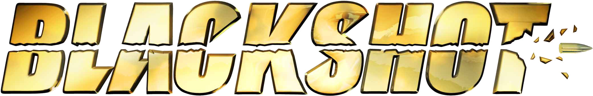

2009 - 2011
I had my first computer with internet connection in 2009 (Primary four). One friend introduced Miniclip to me and I spent around an hour or two playing on Miniclip daily. I played almost every game that were available on Miniclip in 2009. I was not too addicted to gaming back then.
I was introduced to Blackshot in 2010 (primary five) and I slowly became addicted to it. I spent more than three hours daily playing Blackshot. I wanted to create a clan in Blackshot but that would cost me a lot of Bounty Point (in-game currency) that was why I cannot spend fiat buying virtual currency, so I started playing Melee (one of the cheapest weapons). Someone held a montage making contest and the prizes were very attractive. I decided to give it a try and learn to make montages using the Window Movie Maker and Window Live Movie Maker I downloaded. I uploaded my first gaming video to Youtube under the name "Firered2011Blackshot". Even though I did not win the contest, it made me eager to upload more gaming videos to my channel - which might soon become a somewhat popular Blackshot related channel.
Still proud of it even though I received 30 dislikes and only four likes.
2012 - present
Still addicted to Blackshot, during game maintenances, I will watch other Blackshot videos such as gameplays, montages and storylines. Inspirited by storyline videos, I decided to make a Blackshot storyline of my own. I asked for help and tips on how to make a storyline. On the 29 January 2012, I published my first storyline! And on 02 February 2012, I published my second storyline. The second storyline I made was quite popular and it motivated me to create more storylines. I uploaded more and more storylines (and some montages) as time go on. I made a lot of online friends during my videos making peak.
Soon my Youtube channel became the channel with the most Blackshot storylines. I receive a lot of views everyday for my videos. Sometime later (probably secondary 2) I stopped playing Blackshot and moved to other games such as Crossfire and Battlefield Play4Free. These game however did not make me stay long, my addiction to computer gaming stopped when I reached secondary three due to an interest in web development (and Bitcoin) - but I would still sometime play games.
Today, despite the fact that I did not upload new videos to my Youtube channel, I am receiving new subscribers and about 2000 views every month. I might consider making and uploading new gaming videos again.